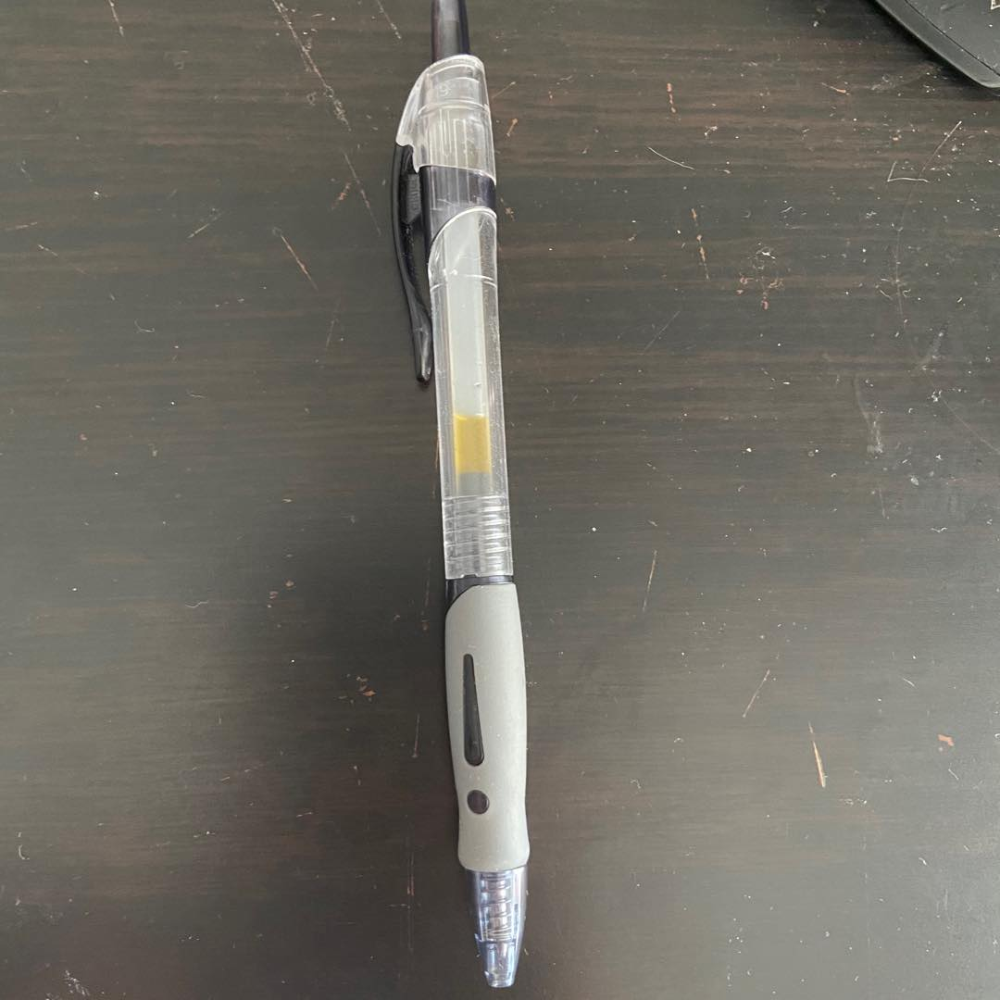
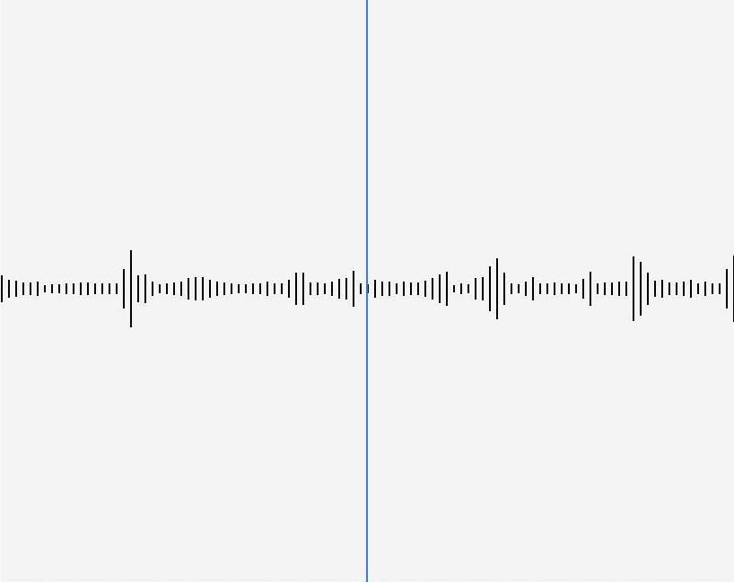

Do objects have emotions？
Can we define emotions for them?
Inspiration
I called my mom yesterday night because I didn't call her for a long time. I noticed that her voices sound so excited.
I can feel her emotion through her voice. After that phone call, I am starting to question whether the emotion is a characteristic that belongs only to humans/animals?
Can inanimate objects have emotions？
Brainstorming/research
I started to look at the objects on my table, and play with them. I found out that each objects have special sounds.
Although some objects are in same status(solid/liquid), they all make different sounds.The property of sound determines pitch.
Different frequency of the sounds can bring us different kinds of feeling. So we can use sounds frequncy to identity the object's emotion. High frequency：
The sound amplitude of this frequency affects the expressiveness of the tone. If the overtone amplitude of this frequency band is relatively full, then the sound resolution will be very good. Mid-high frequency：
It affects the coolness (coldness) of the sound. If the tone component of this frequency is too little, the tone will become warmer; if the component of this frequency is too much, the tone will become cold. Mid-low frequency：
If the tone of this frequency band is fuller, the tone will become more round and powerful. If the tone this frequency band is lacking, the sound will become weak, empty, and divergent. Low frequency：
If the tone component of this frequency is fuller, the sound will become majestic and have a sense of space. If the component of this frequency is lacking, the tone will become pale, thin, cold, weak, and weak.
The development
I recorded the sounds of different objects on my table, use frequency wave to represent the characteristic of that object.
Sound frequency wave:
<

Every frequency wave is unique, so I want to define a frequency range, and when I input the sounds of the object, the computer will identify the emotion for that object.
prototype
I don't have the arduino with me right now, but I did some research on it.
This is a Audio Analyzer which can The audio signal will be filtered into 7 bands through this module. And it will output the amplitude of each frequency band.
To-do list
I have the basic idea right now and I want to try out the arudino code to see whether it works or not.